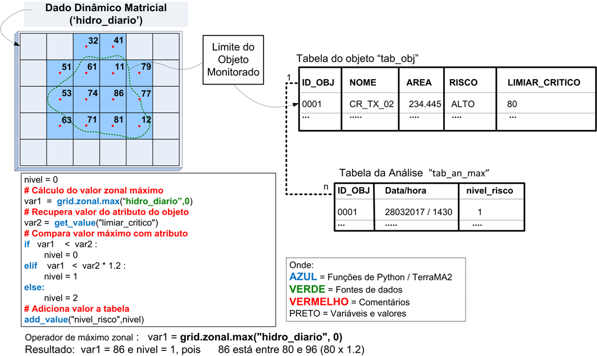

Exemplo de análise baseado em Objetos Monitorados
Lista de Operadores sobre obj monitorado 
Em geral, análises baseadas em objeto monitorado são realizadas pela sobreposição de dados estáticos vetoriais com um dos três tipo de dados dinâmicos, isto é, grades retangulares, PCD ou ocorrências, que foram coletados, gerados ou apenas disponíveis na base de dados.
A sobreposição dos objetos monitorados com os dados dinâmicos é realizada com uso dos operadores geográficos criados exclusivamente para uso na plataforma, juntamente com os recursos que a linguagem de programação python proporciona.
O resultado desses operadores são armazenados em variáveis locais do python, que podem ser armazenadas em uma nova tabela de atributos que estará associada a tabela do objeto monitorado. Nessa nova tabela são armazenados ainda a data/hora toda vez que é realizada a análise.
A seguir apresentamos um exemplo típico da utilização de análise baseada em objeto monitorado que compara um atributo do objeto com o valor máximo de um dado matricial de chuva (Figura 3.6). Assim, no exemplo abaixo considere o seguinte cenário:
- O objeto monitorado selecionado contém um atributo denominado “limiar_critico” que contém para cada área um limite de chuva acumulada nas últimas 24 horas a partir do qual deve ser emitido um alerta para a área.
- A série de dados “hidro_diario” contém uma grade com o total de chuva acumulada nas últimas 24 horas.
- Se a chuva acumulada estiver abaixo do limiar definido para cada objeto, o nível de alerta será 0. Se estiver até 20% acima do limiar, o nível será 1. Chuvas acima de 20% do limiar, o nível será 2.
- O resultado da análise será armazenado em uma nova tabela de nome “tab_an_max” que estará associada a tabela do objeto “tab_obj”.

Figura 3.6 – Exemplo de análise com objeto monitorado.
Para uma melhor compreensão do programa de análise do exemplo, vamos analisá-la por partes.
nivel = 0
Essa linha define uma nova variável denominada de “nivel” que será inicializada com o valor 0 (zero). No exemplo, um único objeto (representado por um polígono) está sendo analisado. Caso outros objetos existissem no mapa estático, a variável “nível” seria inicializada em 0 para cada objeto. Em outras palavras, o programa todo é executado para cada objeto.
# Cálculo do valor zonal máximo
var1 = grid.zonal.max(“hidro_diario”, 0)
Essa linha define uma nova variável denominada de “var1” que será inicializada com o valor do operador zonal “maximo” aplicado à grade “hidro_diario”. Na prática, estamos buscando qual o valor de chuva acumulada na área em análise a partir da grade. Mais adiante será feita uma discussão maior sobre operadores zonais. Observe que “hidro_diario” é o nome do dado dinâmico que contém as informações de chuva e deve estar cadastrado no projeto.
# Recupera valor do atributo do objeto
var2 = get_value(“limiar_critico”)
Essa linha define uma nova variável denominada de “var2” que será inicializada com o valor do atributo “limiar_critico” de cada objeto monitorado.
# Compara valor máximo com atributo
if var1 < var2 :
Na linha acima estamos comparando o valor da chuva acumulada obtida da grade com o limiar definido em um objeto em particular, que tem valor 80. Lembrando que a fonte de objeto monitorado pode ter vários objetos (polígonos) com limiares diferentes.
nivel =0
elif var1 < var2 * 1.2:
nível = 1
else :
nivel = 2
Nas linhas a seguir estamos estabelecendo os níveis de alerta determinados pela comparação como um limiar pré-definido. Se o valor de chuva acumulada for menor do que o valor do limiar de chuva para esta área, vamos retornar o nível = 0. Seguindo as definições do exemplo, a seguir retornamos nível = 1 se a chuva acumulada superar o limite em menos de 20%, isto é o valor de 96 (= 80 x 1.2). Caso contrário o valor de nível = 2.
# Adiciona valor a tabela
add_value(“nivel_risco”, nivel)
Outro ponto importante a ser observado no exemplo, é a presença de comentários que não tem qualquer significado na execução do programa, apenas para fins de documentação. Use o sinal # para adicionar uma linha de comentário.
A última linha do programa utiliza o comando “add_value” da plataforma para adicionar uma nova coluna na tabela “tab_an_max” e para armazenar o valor do nível. É obrigatório o uso desse operador pelo menos uma vez.
Para uma maior compreensão da sintaxe da linguagem ou uso de opções avançadas, recomenda-se a leitura da documentação disponível em https://www.python.org/ .
Created with the Personal Edition of HelpNDoc: iPhone web sites made easy